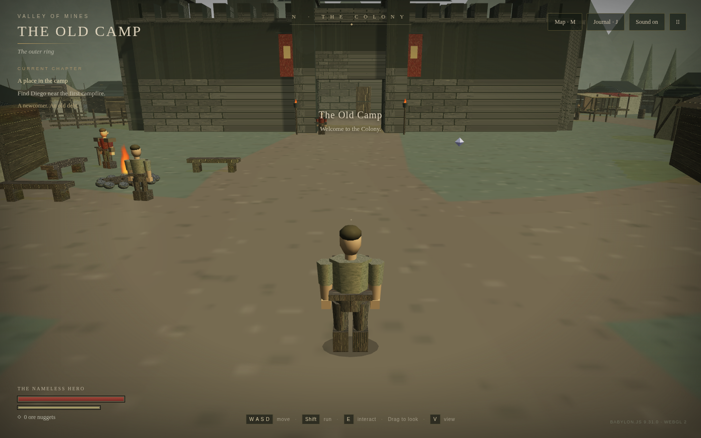
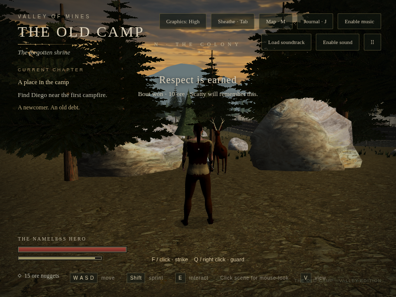
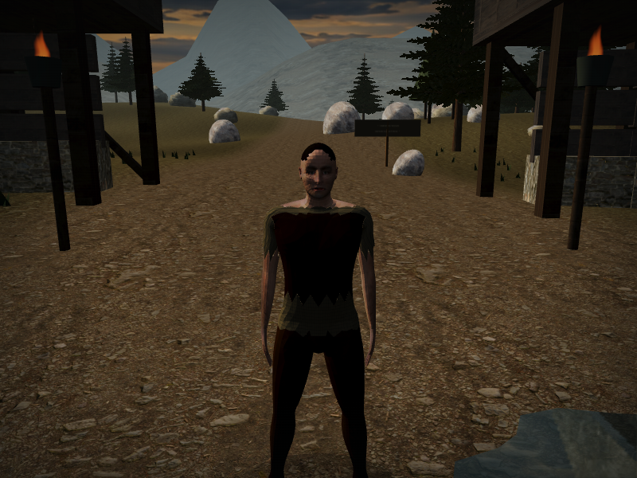

Old Camp · Visual progress
Before · first playableFlat ground, basic procedural textures, a broad open approach and simple character proportions.
The wild valleyForest paths, peaceful wildlife, mine workings, ruins and a river crossing. Five landmarks add stories to the journal.
A human castCC0 human geometry and skin, a flexible skeleton, photographed clothing materials, and earned sword handling.